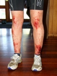
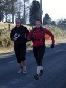
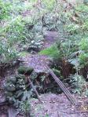
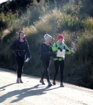

|
Hamel's Haunts 2011 Organiser: Matt Bixley Saturday night watching the weather, we dodged a massive bullet before Sunday’s Rogaine. The entire Sth Island except the East Coast was looking at a Snow Day. We got a glorious winters day instead. So at 9:30am 48 people started rolling in to the Halfway Bush School Hall and looking at their maps. Field split evenly between the 6hr and the 3hr. 11:00am and they were gone. I must have done something right with the map as they went in several directions. The PTA also turned up and started on the soups, sausages and cake. mmmmm, soooup. Family then went for a drive to see how it was going, all good, everyone happy. Nice.   All the 3 hour teams then returned within a 10 minute window, blood and carnage galore. Pretty sure I said at the briefing that no bush bashing or fighting gorse was required. Most blood was seen on those who have links with Athletics!!!!! One was even seen up a tree and I know I didn’t place one up there. Anyone going out with Kevin Duggan, make sure you’ve got the map. Only one case of domestic disharmony that I know of. 3 Hour
So that left the 6 hour teams out on the course. You always hope when you turn up to one of these that the map will be accurate or at the very least you can find things. Most of this was set on main tracks and roads, but a few controls were in obscure places. ALL were found though. Big thanks to the team who took the extra effort to find the control that had been ripped up and thrown away. Alan Grant picked me up on one of the controls that was marked about 40 meters below where it should have been. The rest were bang on, yay. When I set it, I felt there was ZERO chance of anyone getting near clearing everything. I was right, just. Tom Wu & Hamish Fleming, a couple of students with a passion for the outdoors made some very smart choices, went hard and got all but 3 controls. Watch out for them as they get a bit more nav experience. They’re Good. 6 Hour
  Funniest part of the day for me was having to send 4 of the most experienced teams back out to collect an easy 90 points because they all had 20 minutes to spare. ALL moaned, hey you guys paid for it A huge thanks to all of you for coming out and supporting myself and the school. It’s made a solid dent in the cost’s of going away to represent New Zealand later this year. With luck I’ll be able to come back from the Commonwealth 24hr Championships (running not rogaining) with a medal of some sort. All I’ll have to do is run 240km on a 1026m flat road loop. For those that can, get over to Clyde for the Highland Events rogaine in September, stay at the Golden Gate Lodge or go in for a beer. Glen is a big supporter of events in the region, which makes it easy to put on things for us to do. Matt Bixley |